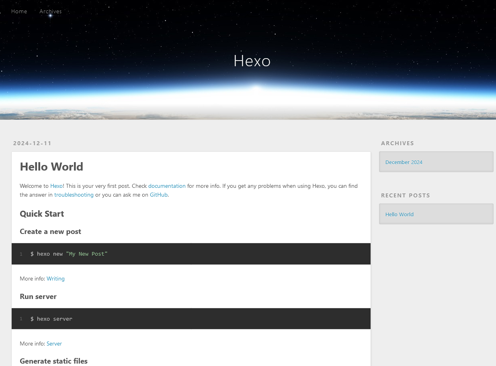
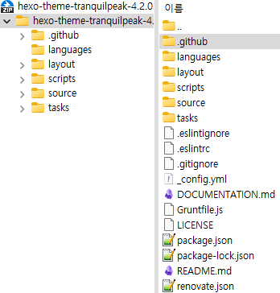
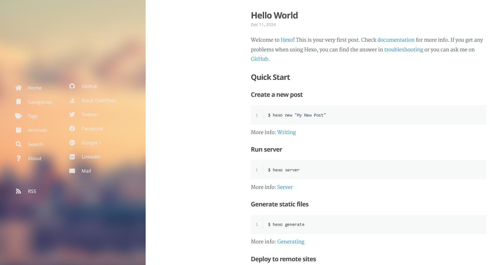

GitHub Pages: Hexo with Tranquilpeak theme - Introduction
Contents
Introduction
여러 가지 이유로 블로그가 필요했습니다.
다른 잡다한 것을 신경 쓰지 않고 글만 쓸 수 있게 만들어진 플랫폼이 이미 많이 있지만, Git과 GitHub에 더 익숙해지기 위해 GitHub Pages를 선택했습니다.
처음 선택했던 것은 GitHub Pages를 검색하니 바로 나왔던 Jekyll과 Chirpy 테마였는데, 작업하는 동안 계속 오류가 발생했었습니다. 하나씩 해결하다 보니 GitHub Pages에 제대로 표시되긴 했는데, 뭔가 새로 하려고 하면 또 오류가 보일 것 같아 다른 방법을 찾아봤습니다.
Jekyll 외에 Hexo, Hugo, Gatsby, Pelican 등이 있었는데, 팀 프로젝트를 진행할 때 Node.js를 사용했었으므로 구조가 조금이라도 보이는 Node.js 기반으로 작동하는 Hexo를 선택했습니다.
테마는 Tranquilpeak을 선택했습니다. 선택지가 많은데 많지 않았습니다.
Install: Hexo
이하 과정 중 막히는 부분이 있다면 Hexo 공식 문서를 따라서 진행하시면 됩니다.
Git과 Node.js를 설치해야 합니다.
설치할 당시 작업환경은 Windows 11, Node.js v18.20.4 입니다.
GitHub에 저장소를 만들어야 합니다.
- GitHub Pages 배포만 하려면 저장소 한 개 만들기
- GitHub Pages 소스도 저장하려면 저장소 두 개 만들기
GitHub Pages 배포를 위한 저장소를 만들 때 이름을 (username).github.io 으로 만들어야 합니다.
GitHub Pages 배포를 위한 저장소는 공개 저장소로 만들어야 합니다.
명령 프롬프트를 열어서 npm install hexo-cli -g[1] 을 입력해 Hexo를 설치합니다.
Hexo가 설치됐다면 hexo init <folder> 을 입력해 GitHub Pages 작업용 폴더를 생성합니다.<folder>에는 C:/Github_Pages처럼 경로 전체를 입력하시면 됩니다.
이후 Hexo 관련 포스트에서 Hexo 폴더나 <folder>가 언급될 경우, 이를 GitHub Pages 작업용 폴더로 치환해서 읽어주세요.
폴더가 생성됐으면 cd <folder>을 입력해 생성한 폴더로 이동한 뒤 npm install 명령으로 의존성 패키지들을 설치합니다.
hexo server -o이나 hexo s -o[2]를 입력하면 Hexo 서버가 시작되고 브라우저가 열려서 설치한 Hexo 페이지를 표시합니다. 아직 테마를 설치하지 않았으므로 기본 테마인 Landscape가 적용된 화면이 보입니다.

이것으로 Hexo 설치가 끝났습니다.
[1] -g 옵션은 Global을 의미하고, Hexo를 시스템 전체에서 사용할 수 있도록 설치합니다. ↩
[2] -o 옵션은 Open을 의미하고, Hexo 서버가 시작되면 자동으로 브라우저를 열어서 로컬 서버에서 실행 중인 블로그 페이지를 표시합니다. ↩
Install: Tranquilpeak
이하 과정 중 막히는 부분이 있다면 Tranquilpeak 공식 문서를 따라서 진행하시면 됩니다.
다른 Hexo 테마는 git clone으로 받지만, Tranquilpeak 테마는 Tranquilpeak GitHub에서 직접 받아야 합니다.
Releases로 접속해서 최신 버전을 받습니다. 2024년 12월 11일 기준 최신 버전은 4.2.0입니다.

압축을 풀어서 나온 폴더 이름을 tranquilpeak으로 변경하고, Hexo 폴더로 돌아가서 tranquilpeak 폴더를 themes 폴더 안으로 옮깁니다. 경로가 <folder>/themes/tranquilpeak가 될 것입니다.
Hexo 폴더로 돌아가서, 편집기를 열어서 _config.yml 파일을 불러옵니다.theme을 찾아서 값을 수정합니다. 기본 테마인 landscape로 설정되어 있을 텐데, tranquilpeak으로 바꾸고 저장하시면 됩니다.
명령 프롬프트에서 tranquilpeak 폴더로 이동하고, npm install && npm run prod[3] 명령을 실행합니다.
끝났으면 명령 프롬프트에서 cd ../.. 명령을 실행해 Hexo 폴더로 돌아갑니다.
Hexo 폴더에서 hexo clean && hexo generate && hexo server -o 명령으로 Hexo 서버를 실행합니다.hexo clean 명령어는 Hexo에서 생성한 캐시 파일과 배포용 파일들을 삭제하는 기능을 합니다. hexo c는 사용할 수 없는데, 명령어 목록을 보면 clean과 config이 있어서 c로 시작하는 명령어가 두 개 존재하므로 c 하나만으로는 무엇을 명령하는지 알 수 없기 때문인 것 같습니다.hexo generate 명령어는 작업한 소스를 기반으로 정적 파일들을 생성합니다. hexo g로 줄여도 같은 결과를 볼 수 있습니다. 실행하면 public 폴더를 생성하는데, 이 폴더의 내용물을 GitHub Pages 배포용 저장소에 올릴 것입니다.
문제 없이 진행되었다면 Tranquilpeak 테마가 적용된 화면을 볼 수 있습니다.

이것으로 Tranquilpeak 테마 설치가 끝났습니다.
[3] npm run prod는 package.json 파일에 정의된 사용자 스크립트를 실행하는 명령입니다. prod는 production의 약어입니다. ↩
Conclusion
Hexo와 Tranquilpeak 테마는 Jekyll과 Chirpy 테마를 설치할 때와 다르게 설치과정에서는 문제가 없어서 편했습니다.